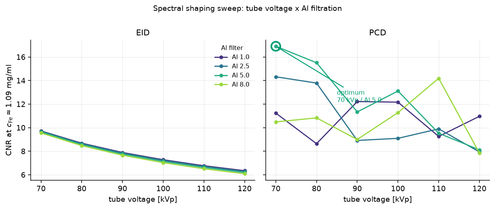
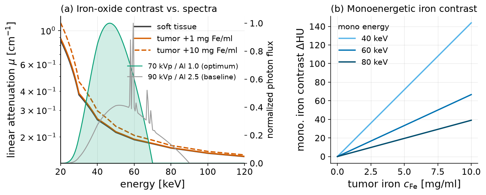
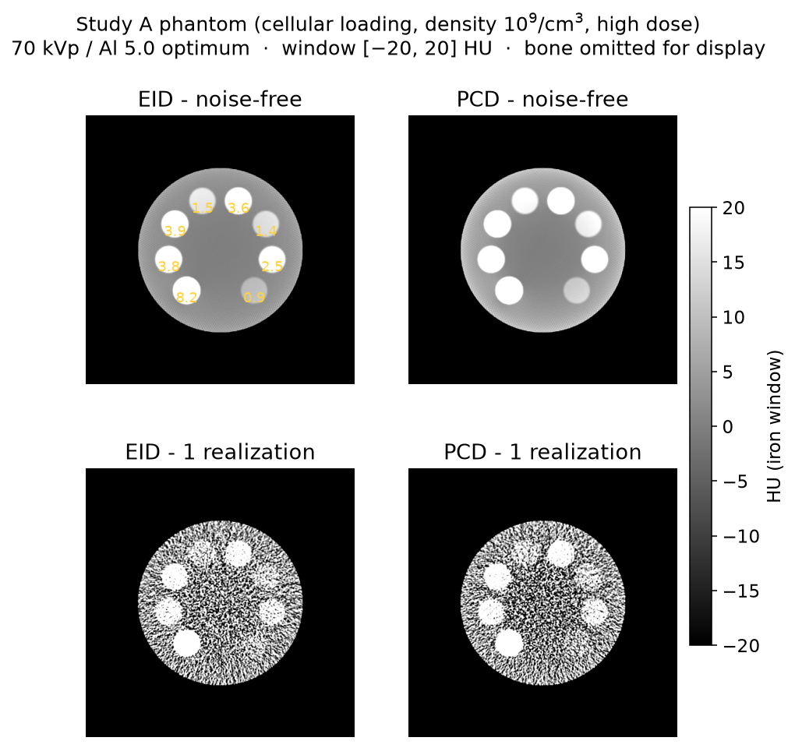
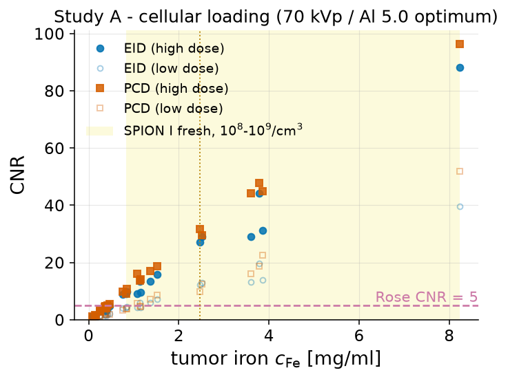
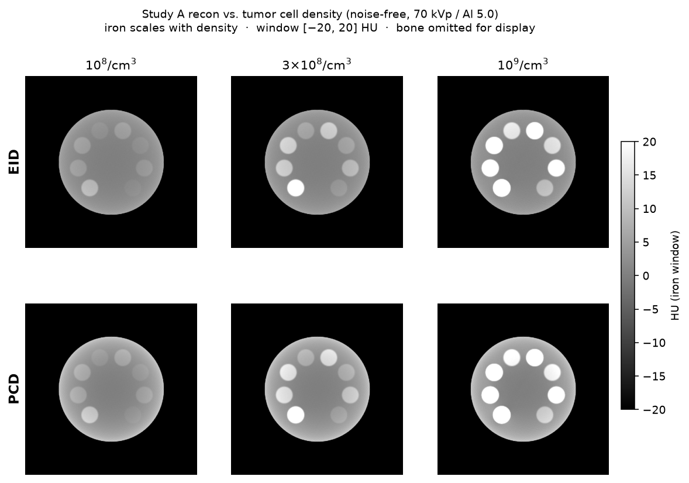
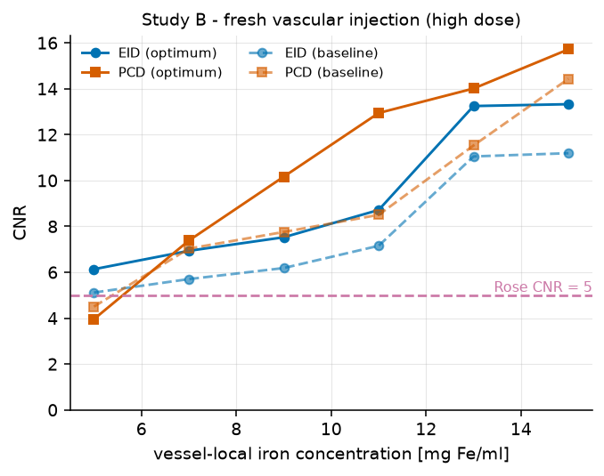
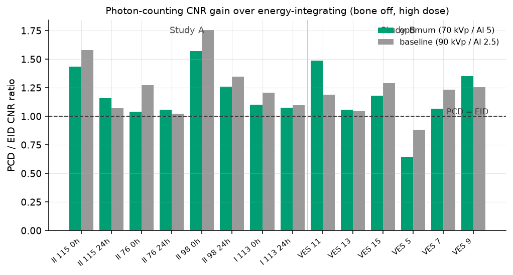

01Overview
We image an iron-loaded melanoma inside a rabbit-scale phantom and ask at
what iron dose the nanoparticles become detectable, and how spectrum, detector type, and
biological distribution shift that limit. This is a detectability study — we report
contrast (ΔHU) and contrast-to-noise ratio (CNR) against the Rose criterion, not a full
mathematical factorial. Every figure below is regenerated from results/.
All numbers on this page use the no-bone phantom
(with_bone=False). The bone-insert cells are degenerate here — the cortical-bone
rod dominates the ROI statistics — so they are excluded from the reported iron thresholds.
02Study design (E1–E5)
Five experiments build on one another. The spectrum + detector optimization (E2) is run first; its optimum feeds the two biological detectability studies (E3, E4) and the 3D verification (E5). Each of E3/E4/E5 is always run twice: once at the E2 optimum, and once at a conventional 90 kVp baseline, so every result carries its own "does the optimized spectrum actually help" control.
| Exp. | Name | What it does |
|---|---|---|
| E1 | Physics & materials | Full-particle magnetite + PAA attenuation model; HU vs iron; cross-check vs NIST. |
| E2 | Spectrum + detector optimization | Sweep tube voltage × filter × PCD bins; pick the CNR-optimal acquisition. Feeds E3/E4/E5. |
| E3 | Study A — homogeneous (cellular uptake) | Cellular loading × cell density; detectability of internalised iron. |
| E4 | Study B — vascular (fresh injection) | Freshly-injected SPIONs confined to tumor vessels; detectability of the vascular phase. |
| E5 | 3D verification | Real RabbitCT C-arm geometry, full 3D FDK — confirms the 2D detectability limits. results pending |
Detectability study — factor structure
This is a detectability study (a multi-factor effects study), not a mathematical factorial. In each of E3/E4/E5 the reported factors are detector {EID, multi-bin PCD}, dose {low 20 000, high 100 000 photons/px}, and the biological concentration axis; each cell repeats over 30 noise realizations. Every study is run at both spectra:
- E2 optimum — 70 kVp / Al 5 mm, PCD bins 10 / 37.5 / 47.5 / 70 keV.
- 90 kVp baseline — 90 kVp / Al 2.5 mm (conventional C-arm setting).
Held fixed (not factors): water beam-hardening precorrection is always on; the Parker-weighted short scan is always on; the 2D fan-beam mid-plane reconstruction geometry is common to all cells.
03E2 — spectrum + detector optimization
Iron contrast is photoelectric (no usable K-edge — 7.1 keV is out of range), so it favors low energy. A tube-voltage × filter × detector sweep picks the acquisition that maximizes iron CNR. This optimum is what E3/E4/E5 run at.
Optimum vs baseline
The winner is a soft, lightly-filtered beam read out by a photon-counting detector:
| Setting | Optimum (E2) | Baseline |
|---|---|---|
| Tube voltage | 70 kVp | 90 kVp |
| Filter | Al 5.0 mm | Al 2.5 mm |
| Detector | PCD, 3-bin | (EID / PCD both run) |
| PCD bin edges | 10 / 37.5 / 47.5 / 70 keV | — |
| Iron CNR @ 1 mg Fe/ml | 16.9 | — |
| PCD gain vs EID | ~1.20× | — |
At the representative 1 mg Fe/ml insert the optimum PCD reaches CNR 16.9 (100 000 photons/px), about 1.20× the matched EID CNR and 98 % of the ideal energy-weighting ceiling. Lower kVp raises contrast; heavy hardening filters (Cu, Sn) hurt it, so the win is keeping the beam soft, not adding a K-edge filter.

04E1 — materials & attenuation
Iron is loaded into a soft-tissue matrix (not water) so a zero-iron tumor matches background. We simulate the whole particle — magnetite core plus PAA coating — and verify the attenuation model before imaging.
What the nanoparticles are, and how we count them
The reference formulation is a real polyacrylic-acid (PAA)-coated magnetite (Fe3O4) SPION suspension: iron-oxide cores of ~8 and ~12 nm that assemble into ~70–250 nm hydrodynamic clusters (Heinen et al.). Contrast is driven by the iron oxide; magnetite has an iron mass fraction of 0.724 (3·55.85/231.5), so the bound oxygen is included (~+7 % over pure Fe). Iron's K-edge is 7.1 keV — out of the diagnostic range, so all contrast is photoelectric and lives at low energy.
Full-nanoparticle simulation (magnetite core + PAA coating)
We simulate the whole particle, not just the iron: the tumor material is ICRU soft tissue +
magnetite (mass = cFe/0.724) + the PAA coating (polyacrylic acid, monomer
C3H4O2, registered as a CONRAD C/H/O material). From the tumor
iron concentration we estimate the whole-nanoparticle concentration
cNP = cFe / (0.724 · (1 − φ)), where φ is the coating's mass
fraction of the particle.
φ is taken per formulation from the article's supplementary TGA. The magnetite fraction is 84.8 % (SPION I) and 64.2 % (SPION II), so the coating fraction is φ ≈ 0.15 for SPION I and φ ≈ 0.36 for SPION II — SPION II carries roughly twice the PAA. φ sets only the reported mg SPION/ml; the PAA is low-Z (C/H/O), essentially tissue-equivalent, so it is negligible for the X-ray μ.
Iron concentration vs particle concentration
The two are kept separate. All contrast and detectability numbers on this page are reported as
mg Fe/ml in the tumor. As a sanity anchor, iron adds about 6.7 HU per mg Fe/ml at
60 keV. The per-particle mapping is cNP = 1.625 · cFe
(SPION I) and cNP = 2.16 · cFe (SPION II).


05E3 — Study A (homogeneous / cellular uptake)
Iron internalised by tumor cells gives a ~uniform tumor iron distribution. The tumor iron concentration is the article's measured cellular loading (pg Fe/cell) times the tumor cell density, swept over {1×10⁸, 3×10⁸, 1×10⁹} cells/cm³. Each formulation uses its own coating (SPION I φ ≈ 0.15, SPION II φ ≈ 0.36).
Concentrations and detection thresholds (E2 optimum, no bone)
For SPION I fresh (0 h, 8.23 pg Fe/cell) the tumor iron scales directly with cell density: 0.82 / 2.47 / 8.23 mg Fe/ml at 1e8 / 3e8 / 1e9 cells/cm³.
| Cell density | SPION I fresh cFe | CNR (EID, high dose) |
|---|---|---|
| 1×10⁸ cells/cm³ | 0.82 mg Fe/ml | 9.2 |
| 3×10⁸ cells/cm³ | 2.47 mg Fe/ml | 27.2 |
| 1×10⁹ cells/cm³ | 8.23 mg Fe/ml | 88.2 |
Detectability crosses the Rose CNR = 5 criterion at 1×10⁸ cells/cm³ at high dose and at 3×10⁸ cells/cm³ at low dose — so at realistic loads the study is dose-limited, not contrast-limited. The best (lowest) detection threshold is 0.41 mg Fe/ml with PCD vs 0.75 mg Fe/ml with EID (high dose, 3e8). SPIONs at realistic melanoma cellularity sit right at the CT detection limit.


06E4 — Study B (vascular / fresh injection)
The vascular phase: freshly-injected SPIONs still in the blood carrier inside the tumor vessels, before cellular uptake. Contrast is confined to ~150 µm vessels occupying ~10 % of the tumor volume, at a local vessel concentration of 5–15 mg Fe/ml. With mass conserved this gives a tumor-mean of 0.5–1.5 mg Fe/ml.
Detection thresholds (E2 optimum, no bone)
At the CT voxel the 150 µm vessels are unresolved, so partial-volume averaging makes the ROI-mean contrast track the tumor-mean iron. At high dose the CNR = 5 crossing is:
| Detector | Crosses CNR = 5 at | CNR at that vessel level |
|---|---|---|
| EID | vessel 5 mg Fe/ml (mean 0.5) | 6.1 |
| PCD | vessel 7 mg Fe/ml (mean 0.7) | 7.4 |
So the vascular phase is detectable at high dose from a local vessel concentration around 5–7 mg Fe/ml — the low end of the article's 1–10 mg Fe/ml suspension range.

07EID vs PCD
How much does photon counting actually buy? The gain depends on how the energy bins are combined. With a post-combination matched filter the PCD delivers about 1.2× the EID CNR; a naive per-bin pre-sum gives essentially 1.0×. Noise is equalized between detectors, so the comparison is apples-to-apples.
Why ~1.2×, not 2×
Iron contrast lives in the low-energy bin, which is also the most photon-starved. A matched-filter
weighting wb ∝ Sb/Vb applied after bin
combination reaches the CNR-optimal ceiling (~1.2× EID at the E2 optimum, 98 % of the ideal
energy-weighting bound). A per-bin pre-sum throws that weighting away and lands at ~1.0×. On the
softer optimized 70 kVp beam the EID already captures most of the available contrast, so the
headroom for the PCD is modest.

08E5 — 3D verification
A full 3D FDK detectability run on the real RabbitCT C-arm geometry, to confirm the 2D detectability limits carry over to a realistic cone-beam acquisition. It is run at both the E2 optimum and the 90 kVp baseline, like E3 and E4.
.rctd RabbitCT geometry is decoded (SID 745 mm, SDD ≈ 1196 mm, 496 views
over 198°) and the 8 cm³ SPION tumor is inserted; this section will fill with the 3D FDK
detectability numbers once the run completes.09Manuscript
A full SPIE Medical Imaging draft assembles these results — dose model, physics, the E2 spectrum optimization, Study A, Study B, EID vs PCD, and the 3D rabbit geometry — in the compiled PDF (source spie_manuscript.tex). The GPU spectral-detector and noise-generator machinery used here is upstreamed to CONRAD.
10Code audit
Annotated snippets of the key pipeline steps so a reviewer can audit the methodology without reading the whole codebase.
Dose model — delivered mass → tumor iron concentration
Iron concentration is anchored to the article's measured cellular loading times the tumor cell density (Study A), or to the injection concentration confined to the vessel volume (Study B).
# Study A: pg Fe/cell (measured) x cell density -> tumor c_Fe [mg Fe/ml]
# SPION I fresh = 8.23 pg Fe/cell; densities {1e8, 3e8, 1e9} cells/cm^3
c_fe = pg_fe_per_cell * cell_density_per_cm3 * 1e-9 # -> mg Fe/ml
# 8.23 pg/cell @ 1e8 -> 0.82 ; @ 3e8 -> 2.47 ; @ 1e9 -> 8.23 mg Fe/ml
E2 optimum spectrum + PCD bins (fed to E3/E4/E5)
The optimized acquisition read from results/spectral/optimum.json.
optimum = {"kvp": 70.0, "filter": "Al5.0",
"detector": "PCD", "pcd_bin_edges_kev": [10, 37.5, 47.5, 70]}
baseline = {"kvp": 90, "filter": "Al2.5"} # conventional control, run alongside
# iron CNR 16.9 @ 1 mg Fe/ml ; PCD gain 1.20x EID (98% of ideal weighting)
Detectability metrics — ΔHU, CNR, Rose threshold
Per tumor ROI vs soft-tissue reference, over 30 noise realizations; the bone cells are excluded from reported thresholds (degenerate).
d_hu = mean(vol[tumor_roi]) - mean(vol[ref_roi])
cnr = d_hu / std(vol[ref_roi]) # Rose: detectable if cnr >= 5
# thresholds computed only for with_bone == False
PCD bin combination — post-combination matched filter
Bins are combined with matched-filter weights in the count domain, then a single −log. This reaches the ~1.2× gain; a per-bin pre-sum gives ~1.0×.
w_b = S_b / V_b # matched-filter weights (CNR-optimal)
M = sum(w_b * C_b for b in bins) # count-domain combination
p = -log(M / M_air) # single line integral, noise-robust
11Reproducibility
Every artifact on this page is regenerable from source.
- Environment: Java 8 + a pyconrad-compatible Python (3.9/3.10 venv).
- Run E2:
python src/spectral.py→ writesresults/spectral/optimum.json. - Run E3/E4:
python src/run_detectability.py→ writesresults/detectability/study_{a,b}_{optimum,baseline}.json. - Rebuild this dashboard:
python src/build_dashboard.py→ writesdocs/. - Full parameters and rationale: SPEC.md.